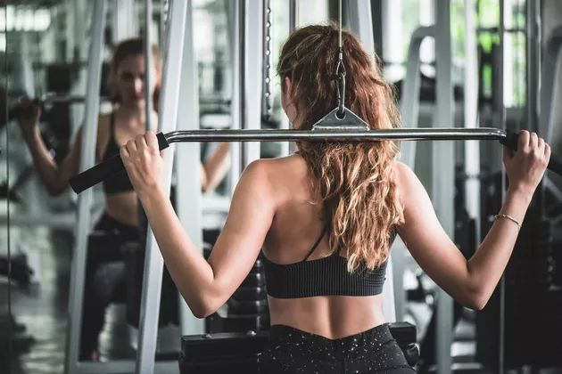
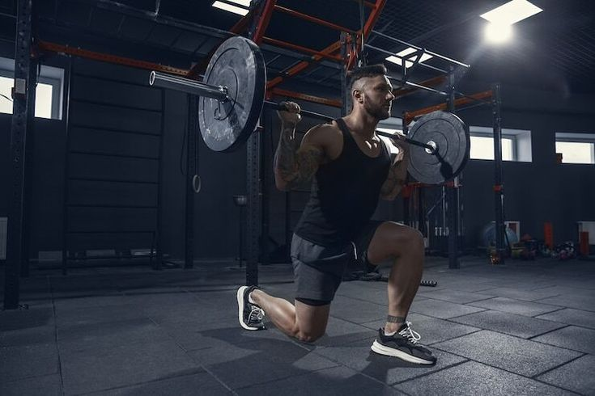
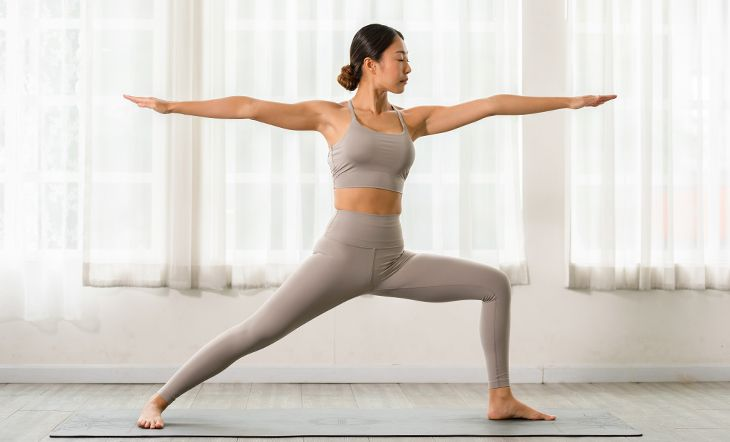

Inspiration, information, and motivation — all in one place.



“It’s not about having time. It’s about making time.”
Why Fitness Matters?
Regular physical activity boosts your mood, strengthens your body, and increases your lifespan. Whether it's a 20-minute walk, a gym session, or yoga at home — moving your body matters.